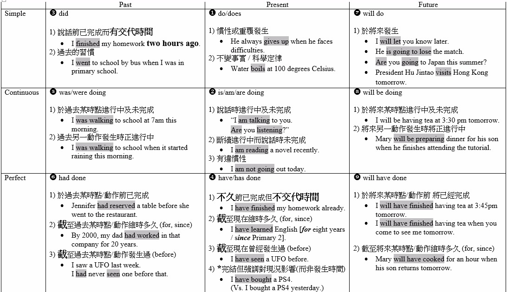

English grammar 101
Tenses
- 

Present Tenses in English
Simple present tense
The simple present tense is one of several forms of present tense in English. It is used to describe habits, unchanging situations, general truths, and fixed arrangements. The simple present tense is simple to form. Just use the base form of the verb: (I take, you take, we take, they take) The 3rd person singular takes an -s at the end. (he takes, she takes)
- To express habits, general truths, repeated actions or unchanging situations, emotions and wishes:
- I smoke (habit); I work in London (unchanging situation); London is a large city (general truth)
- To give instructions or directions:
- You walk for two hundred meters, then you turn left.
- To express fixed arrangements, present or future:
- Your exam starts at 09.00
- To express future time, after some conjunctions: after, when, before, as soon as, until:
- He’ll give it to you when you come next Saturday.
Present continuous tense
As with all tenses in English, the speaker’s attitude is as important as the time of the action or event. When someone uses the present continuous, they are thinking about something that is unfinished or incomplete
- to describe an action that is going on at this moment:
- You are using the Internet. You are studying English grammar.
- to describe an action that is going on during this period of time or a trend:
- Are you still working for the same company? More and more people are becoming vegetarian.
- to describe an action or event in the future, which has already been planned or prepared:
- We’re going on holiday tomorrow. I’m meeting my boyfriend tonight. Are they visiting you next winter?
- to describe a temporary event or situation:
- He usually plays the drums, but he’s playing bass guitar tonight. The weather forecast was good, but it’s raining at the moment.
- with “always, forever, constantly”, to describe and emphasise a continuing series of repeated actions:
- Harry and Sally are always arguing! You’re constantly complaining about your mother-in-law!
Past Tenses in English
Simple past tense
The simple past tense, sometimes called the preterite, is used to talk about a completed action in a time before now. The simple past is the basic form of past tense in English. The time of the action can be in the recent past or the distant past and action duration is not important.
- frequency: often, sometimes, always
- I sometimes walked home at lunchtime.
- I often brought my lunch to school.
- a definite point in time: last week, when I was a child, yesterday, six weeks ago
- We saw a good film last week.
- Yesterday, I arrived in Geneva.
- She finished her work atseven o’clock
- I went to the theatre last night
- an indefinite point in time: the other day, ages ago, a long time ago
- People lived in caves a long time ago.
- She played the piano when she was a child.
Past continuous tense
The past continuous describes actions or events in a time before now, which began in the past and is still going on at the time of speaking. In other words, it expresses an unfinished or incomplete action in the past.
- Often, to describe the background in a story written in the past tense
- “The sun was shining and the birds were singing as the elephant came out of the jungle.
- The other animals were relaxing in the shade of the trees, but the elephant moved very quickly.
- She was looking for her baby, and she didn’t notice the hunter who was watching her through his binoculars.
- When the shot rang out, she was running towards the river…”
- to describe an unfinished action that was interrupted by another event or action
- “I was having a beautiful dream when the alarm clock rang.”
- to express a change of mind
- “I was going to spend the day at the beach but I’ve decided to get my homework done instead.” with ‘wonder’, to make a very polite request
- “I was wondering if you could baby-sit for me tonight.”
Perfect Tenses in English
Present perfect tense
The present perfect is used to indicate a link between the present and the past. The time of the action is before now but not specified, and we are often more interested in the result than in the action itself.
- An action or situation that started in the past and continues in the present.
- I have lived in Bristol since 1984 (= and I still do.)
- An action performed during a period that has not yet finished.
- She has been to the cinema twice this week (= and the week isn’t over yet.)
- A repeated action in an unspecified period between the past and now.
- We have visited Portugal several times.
- An action that was completed in the very recent past, expressed by ‘just’.
- I have just finished my work.
- An action when the time is not important.
- He has read ‘War and Peace’. (= the result of his reading is important)
Present perfect continuous
The present perfect continuous is used to refer to an unspecified time between ‘before now’ and ‘now’. The speaker is thinking about something that started but perhaps did not finish in that period of time. He/she is interested in the process as well as the result, and this process may still be going on, or may have just finished.
ACTIONS THAT STARTED IN THE PAST AND CONTINUE IN THE PRESENT
- She has been waiting for you all day (= and she’s still waiting now).
- I’ve been working on this report since eight o’clock this morning (= and I still haven’t finished it).
- They have been travelling since last October (= and they’re not home yet).
ACTIONS THAT HAVE JUST FINISHED, BUT WE ARE INTERESTED IN THE RESULTS
- She has been cooking since last night (= and the food on the table looks delicious).
- It’s been raining (= and the streets are still wet).
- Someone’s been eating my chips (= half of them have gone).
Past perfect
The past perfect refers to a time earlier than before now. It is used to make it clear that one event happened before another in the past. It does not matter which event is mentioned first - the tense makes it clear which one happened first.
In these examples, Event A is the event that happened first and Event B is the second or more recent event:
| Event A | Event B |
|---|---|
| John had gone out | when I arrived in the office. |
| I had saved my document | before the computer crashed. |
| Event B | Event A |
|---|---|
| When they arrived | we had already started cooking. |
| He was very tired | because he hadn’t slept well. |
Just is used with the past perfect to refer to an event that was only a short time earlier than before now, e.g.
- The train had just left when I arrived at the station.
- She had just left the room when the police arrived.
- I had just put the washing out when it started to rain.
Past perfect continuous
The past perfect continuous corresponds to the present perfect continuous, but with reference to a time earlier than ‘before now’. As with the present perfect continuous, we are more interested in the process.
- Had you been waiting long before the taxi arrived?
- We had been trying to open the door for five minutes when Jane found her key.
- It had been raining hard for several hours and the streets were very wet.
- Her friends had been thinking of calling the police when she walked in.
This form is also used in reported speech. It is the equivalent of the past continuous and the present perfect continuous in direct speech:
- Jane said, “I have been gardening all afternoon.” = Jane said she had been gardening all afternoon.
- When the police questioned him, John said, “I was working late in the office that night.” = When - the police questioned him, John told them he had been working late in the office that night.
Future perfect
The future perfect tense refers to a completed action in the future. When we use this tense we are projecting ourselves forward into the future and looking back at an action that will be completed some time later than now. It is most often used with a time expression.
- I will have been here for six months on June 23rd.
- By the time you read this I will have left.
- You will have finished your report by this time next week.
- Won’t they have arrived by 5:00?
- Will you have eaten when I pick you up?
Future perfect continuous
Like the future perfect simple, this form is used to project ourselves forward in time and to look back. It refers to events or actions that are currently unfinished but will be finished at some future time. It is most often used with a time expression.
- I will have been waiting here for three hours by six o’clock.
- By 2001 I will have been living in London for sixteen years.
- When I finish this course, I will have been learning English for twenty years.
- Next year I will have been working here for four years.
- When I come at 6:00, will you have been practicing long?
Future Tenses in English
Simple future tense
The simple future refers to a time later than now, and expresses facts or certainty. In this case there is no ‘attitude’.
- To predict a future event:
- It will rain tomorrow.
- With I or We, to express a spontaneous decision:
- I’ll pay for the tickets by credit card.
- To express willingness:
- I’ll do the washing-up.
- He’ll carry your bag for you.
- In the negative form, to express unwillingness:
- The baby won’t eat his soup.
- I won’t leave until I’ve seen the manager!
- With I in the interrogative form using “shall”, to make an offer:
- Shall I open the window?
- With we in the interrogative form using “shall”, to make a suggestion:
- Shall we go to the cinema tonight?
- With I in the interrogative form using “shall”, to ask for advice or instructions:
- What shall I tell the boss about this money?
- With you, to give orders:
- You will do exactly as I say.
- With you in the interrogative form, to give an invitation:
- Will you come to the dance with me?
- Will you marry me?
Future continuous tense
The future continuous refers to an unfinished action or event that will be in progress at a time later than now. The future continuous is used for quite a few different purposes.
- The future continuous can be used to project ourselves into the future.
- This time next week I will be sun-bathing in Bali.
- By Christmas I will be skiing like a pro.
- Just think, next Monday you will be working in your new job.
- The future continuous can be used for predicting or guessing about future events.
- He’ll be coming to the meeting, I expect.
- I guess you’ll be feeling thirsty after working in the sun.
- You’ll be missing the sunshine once you’re back in England.
- In the interrogative form, the future continuous can be used to ask politely for information about the future.
- Will you be bringing your friend to the pub tonight?
- Will Jim be coming with us?
- Will she be going to the party tonight?
- Will I be sleeping in this room?
- The future continuous can be used to refer to continuous events that we expect to happen in the future.
- I’ll be seeing Jim at the conference next week.
- When he is in Australia he will be staying with friends.
- I’ll be eating with Jane this evening so I can tell her.
- When combined with still, the future continuous refers to events that are already happening now and that we expect to continue some time into the future.
- In an hour I’ll still be ironing my clothes.
- Tomorrow he’ll still be suffering from his cold.
- Next year will she still be wearing a size six?
- Won’t stock prices still be falling in the morning?
- Unfortunately, sea levels will still be rising in 20 years.